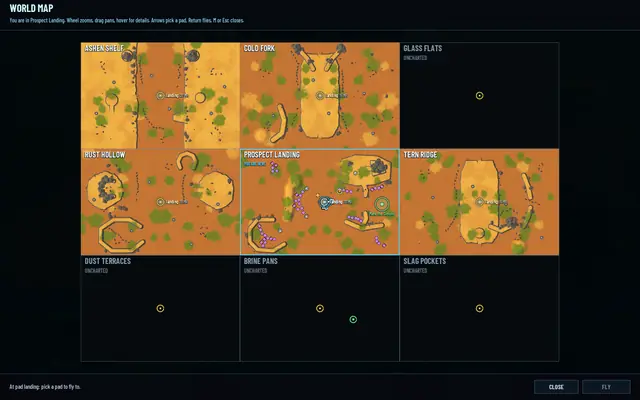
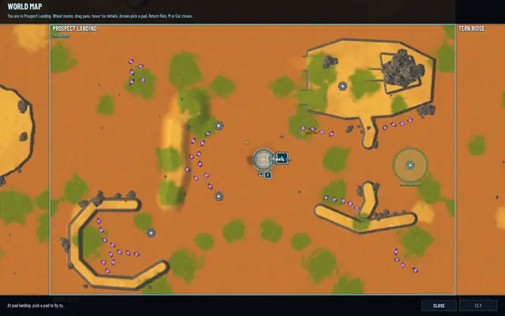
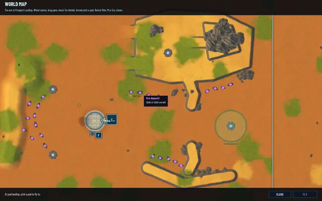
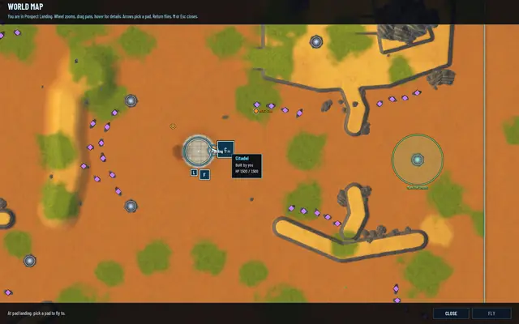
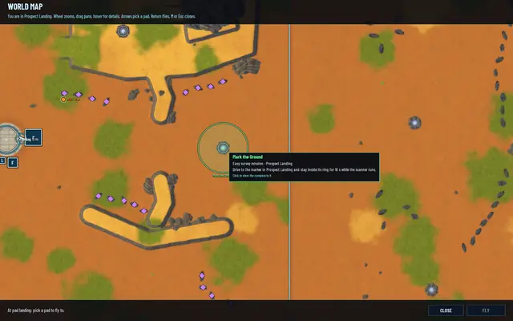
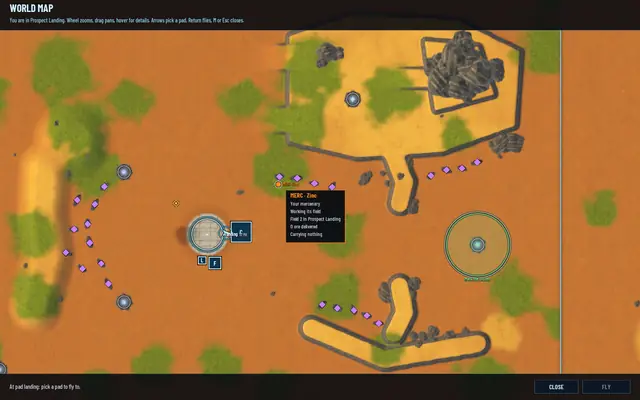

The world map: the real ground, seen from above
The map on M used to be a drawing: flat colours, one per region. Now it's a picture of the actual ground taken from straight above, with everything that's alive drawn over it, and you can point at any of it to ask what it is.

A photograph of every region
Each region is baked into one picture. The game builds the region the way a client would and photographs it with a camera pointing straight down: its terrain, cliffs, rocks and plants, its ore and wells, lit at half past ten in the morning in clear weather, with no units and no fog. That's 8 pixels a cell, 1152 × 768 for a medium region, north up. A script does the whole world in two hidden runs, so when a region changes the map is rebaked in one command.
The pictures lie side by side as the regions do. A region you haven't been to stays dark, with its outline and its name, UNCHARTED. The map opens centred on you; the wheel zooms, dragging pans, and the world keeps running while it's open.
The map, twice

When it landed: six regions seen, three still uncharted, before each region had a ground of its own. Rebaked a few hours later, once each region had a ground of its own.
Rebaked a few hours later, once each region had a ground of its own.
Zoomed in on Prospect Landing. Violet marks are deposits, the rings are pads.


What's alive on it
Over the pictures the map draws what's happening now: you as a cyan arrow, other pilots, your mercenaries in orange, the Brood in red groups with their count, the realm's buildings, deposits in violet that shrink as they empty, MH wells, the blueprint sites you know of in gold, pads as yellow rings, starfalls and their craters, the missions in your Journal and the ringshadow band while it sweeps across. Live units, buildings and deposits show only in the region you're in. Elsewhere the map shows what you know: sites, pads, missions, and your mercenaries at their fields.
Point at anything and a tooltip says what's worth knowing. A deposit shows how much ore is left, and whether a Lodeback is eating it. A building shows who built it and its HP. A site shows its blueprint and whether it's been opened. A mission shows its tier and instructions, and a mercenary its field and what it has delivered. Clicking a mission or a site points your compass at it.
Tooltips

A deposit and the ore left in it.
The Citadel: built by you, HP 1,500 of 1,500.
Mark the Ground, an easy survey mission. Click it to steer the compass there.
Zinc, a mercenary, just hired: field 2, nothing delivered yet.


What isn't right yet
The pictures show the regions as near rectangles, because that's still how they read from above: their walls run along the cells' edges. A second pass on the outlines is next, and the map will be rebaked after it.
The test suites passed when it landed: 473 core, 216 server and 81 network.